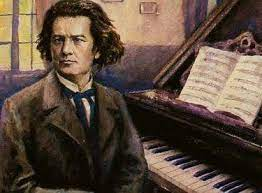

Jeta e Ludwig van Beethoven
Ludwig van Beethoven (1770-1827) Beethoven ishte një kompozitor i madh, i cili shërbeu si një pikë referimi për muzikën klasike dhe romantike.
Muzika e tij e konsiderohet një vepër e artit të lartë dhe shprehje e thellësisë emocionale.
1.Muzika: Krijimi i muzikës ishte pasioni kryesor i Beethovenit. Ai kompozoi në shumë forma të ndryshme,
duke përfshirë simfonitë, sonatat për piano, koncertot, kuartetet e fishekëzave dhe operën.
2.Piano: Beethoven ishte një virtuoz i pianos dhe muzika e tij është theksuar për interpretimin e saj pianistik.
Sonatat për piano të Beethovenit janë të njohura për teknikën e tyre të avancuar dhe shprehjen e pasioneve të forta.
3.Inspirimi natyror: Beethoven shpesh gëzonte natyrën dhe inspirimin që ajo i jepte.
Disa prej veprave të tij, si "Pastoral Symphony" (Simfonia Pastoral) tregojnë ndikimin e natyrës në muzikën e tij.
4.Revolucioni artistik: Beethoven shënoi një revolucion në muzikë, duke ndryshuar formën tradicionale të kompozimit dhe duke eksploruar ide të reja dhe teknika inovative.
Kjo bëri që muzika e tij të jetë pionere e romantizmit muzikor.
5.Filozofia dhe poezia: Beethoven ishte i interesuar në filozofi dhe poezi, dhe ky interes shpesh shfaqej në muzikën e tij.
Disa prej veprave të tij, si "Oda për Gëzimin" (Ode to Joy), janë të bazuar në tekste poezie dhe transmetojnë mesazhe të mëdha filozofike.
6.Vullneti i fortë: Pavarësisht sfidave të jetës dhe humbjes së dëgjimit, Beethoven vazhdoi të punonte dhe të krijonte muzikë.
Vullneti i tij i fortë dhe përkushtimi ndaj artit janë fryma e tregimit të jetës së tij.
7.Trashëgimia e pashmangshme: Beethoven është një nga kompozitorët më të ndikshëm dhe të rëndësishëm në historinë e muzikës.
Trashëgimia e tij muzikore vazhdon të ndiejë efektin e saj në muzikën klasike dhe artistët e sotëm ende frymëzohen nga veprat e tij.
Ludwig van Beethoven lindi më 17 dhjetor 1770 në Bonn, Gjermani, dhe jetoi deri më 26 mars 1827 në Vjenë, Austri.
Jetë e Beethovenit u përball me sfida të mëdha. Ai humbi dëgjimin gradualisht dhe në moshën 46 vjeçare ishte i shurdhët plotësisht.
Megjithatë, ai vazhdoi të kompozonte dhe të performonte muzikën e tij.
Beethoven ishte një personalitet i pasionuar dhe i brendshëm.
Jetës së tij iu karakterizua nga ankthi, tensioni emocional dhe lufta me vështirësitë personale dhe artistike.
Pasuria e tij muzikore është e vlerësuar pas vdekjes së tij, kur ai u bë një figurë e ndritur e muzikës klasike dhe një shkallë për muzikën romantike.
Krijimet e tij mbeten një trashëgimi e shquar për artin muzikor.
